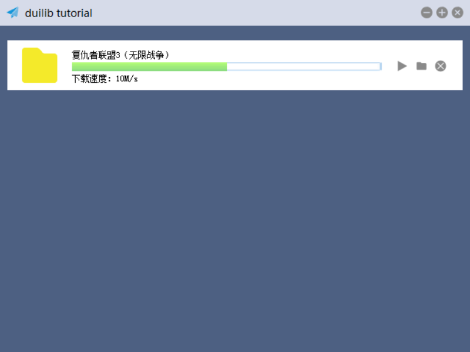

|
duilib自学教程
|
这篇教程主要是为了能够在windows环境下开发一些图形化小工具做一些基础指导，在寻找和对比了一些图形化界面方案后，最终选择了基于 duilib 界面库作为开发方案。
本教程会循序渐进地使用 duilib 库开发出如下界面

Duilib使用C++编写，项目定位主要是迎合互联网桌面软件小而美的趋势发展起来的，比较适合开发一些 windows 系统下小型的图形化软件，具有如下特点：
Bjarke Viksoe 在2005年首先提出一种 windowless 的图形化方案，发表了UI: Become windowless- Bjarke Viksoe，然后国人借鉴了其思想并进行改进开发出了 duilib 库，这是一套专门针对 Windows 系统的 DirectUI 界面库，名字也由此而来。
工程遵循开放，共享，惠众，共赢，遵循 BSD 协议，可以免费用于商业项目。开始在 SVN 官方地址维护更新，但由于国内访问 SVN 站点困难，当时很多人只能下载到其他人转载的“不新鲜”的压缩包来做开发，导致 duilib 发展速度缓慢。
随后作者在 2013 年 12 月将代码迁移到 Github 后项目开始一点点的有人贡献并发展出了多个分支，比较有名的是 Redrain 个人维护的版本和网易易信团队维护的版本。都对 duiLib 自身做了很多拓展，比如 DPI 支持、多语言支持等。
虽然还有一些小问题和兼容性问题，但目前来看 duilib 已经比较成熟，足够驾驭各类 Windows 应用程序界面。
目前官方代码地址为duilib/duilib
1.8.18